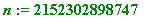
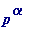
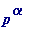
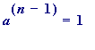
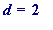

> # 1914_pap.mws
Thinking through Pocklington's 1914-16 paper
Henry Cabourn Pocklington, 1870-1952
. St. John's College, Cambridge. Wrote a paper with title
The Determination of the Prime or Composite
Nature of Large Numbers by Fermat's theorem
. It was published in the
Proceedings of the Cambridge Philosophical Society
(the mathematical
section of it) in 1916 (it was only two pages long!), but it was "Read" on the 9th. of March 1914.
Paragraph I of Pocklington . He starts by making the obvious comments about how one should use Fermat's little theorem when wondering about
the status of a given natural number n (I change all of his symbols, and some of his ways of expression):
calculate mod n , and
if that is not 1 then n is automatically composite, but
if it is 1, then it's time to start thinking:
Pocklington then proceeds to make an examination of consequences of :
![[Maple Math]](images/1914_PAP2.gif) mod
n
mod
n
Let
p
be a prime factor ("preferably the largest") of
 , and let
, and let
 be the largest power of
p
dividing
be the largest power of
p
dividing
 (so one now has
,
(so one now has
,
for some
w
(
w
not divisible by
p
).
He now
suggests computing
![[Maple Math]](images/1914_PAP7.gif) mod
n
, and he goes on to
mod
n
, and he goes on to
remark that
in the event that
![[Maple Math]](images/1914_PAP8.gif) mod
n
(he later considers the case when it
is
1) , one should then compute:
mod
n
(he later considers the case when it
is
1) , one should then compute:
(definition of
)
[
Aside
: for Maple computations one would
not
use i
, as it leads (when large value were involved) to "Error, object too large";
rather one uses i
, which causes no problems.]
He remarks that if
then one has found a
proper factor
of
n.
For example
, let
n
be given by:
> n := 2152302898747; # from Pinch's Nov.'93 AMS Notices article

> 2&^(n-1) mod n; # taking 'a' to be 2

> ifactor(n-1);

> p := 31;
> 2&^((n-1)/p) mod n; # p = 3779 gave a '1' here:

not '1', and so we proceed to compute:
> delta := igcd(2&^((n-1)/p) mod n - 1, n);
>
is a proper factor of n :
> n/delta;
and then he goes on to comment on the case where :
He simply remarks that
when
![[Maple Math]](images/1914_PAP22.gif) then
:
then
:
is (obviously)
not
divisible by
any
prime factor of
n
, and
from that
he manages to squeeze an
important observation
about
any prime factor
q
of the number
n
.
But first
, let us see
some examples
where
![[Maple Math]](images/1914_PAP24.gif) ,
,
following on from
having already had
mod n:
[So, in the following I
want to have
 .]
.]
> ifactor(n-1); # recall primes dividing n-1:
> p1 := 23; # high to low, first one giving:
> 2&^((n-1)/p1) mod n; # NOT 1:

> delta1 := igcd(2&^((n-1)/p1) mod n - 1, n); # IS 1:
and I am letting the cat out of the bag in revealing what it is that Pocklington notes as a
consequence
: he notes that for
such a
'
p
' [in the computation it is 'p1'] one then has that
 (mod
(mod
 ) for
all
prime factors
q
of (
) for
all
prime factors
q
of (
 ).
).
In the above numerical example we have:
> ifactor(n);

and so the prime factors of n are:
> q1 := 6763;
> q2 := 10627;
> q3 := 29947;
> ifactor(q1-1);
> ifactor(q2-1);
> ifactor(q3-1);
>
all of which have 23 (here
) as a factor.
Mathematical proof?
How, though, can one prove the
general
claim?
A proof can be furnished by considering
a
, and, for brevity, we
let
a
. Then,
r
divides
(
 ) [that's because, with
) [that's because, with
![[Maple Math]](images/1914_PAP45.gif) mod
n
, then automatically
mod
n
, then automatically
![[Maple Math]](images/1914_PAP46.gif) mod
q
, for
any
prime factor
q
of
n
(indeed, for
any
factor
q
of
n
).]
mod
q
, for
any
prime factor
q
of
n
(indeed, for
any
factor
q
of
n
).]
but
r
does
not divide
![[Maple Math]](images/1914_PAP47.gif) [that's because,
if
r
did divide
then we would have:
[that's because,
if
r
did divide
then we would have:
(mod
q
), from which would follow that
(mod
q
), from which would follow that
(mod
q
), from which would follow that
![[Maple Math]](images/1914_PAP52.gif) is
at least
q
(>1), whereas
it is
1.
is
at least
q
(>1), whereas
it is
1.
It follows that
r
must
contain
 as a factor (since the prime factorisation of (
as a factor (since the prime factorisation of (
 ) contains

as a factor, whereas
) contains

as a factor, whereas
![[Maple Math]](images/1914_PAP56.gif) doesn't.
doesn't.
Here, then, is a theorem of Pocklington's which
summarises
the above analysis:
Theorem
. Let
n
be a natural number, and let
, where
p
is a prime, and
U
is not divisible by
p
. [In other words,
 is the largest power of
p
that divides (
is the largest power of
p
that divides (
 ). I use '
U
' for '
u
nfactored
' - this is a good notation, for it suggests that one need not know how the number
U
actually factors; if one happens to actually know, then regard that as a bonus.] Suppose that
). I use '
U
' for '
u
nfactored
' - this is a good notation, for it suggests that one need not know how the number
U
actually factors; if one happens to actually know, then regard that as a bonus.] Suppose that

(mod
n
) for some integer
a
... (
i
)
and
![[Maple Math]](images/1914_PAP61.gif) ... (
ii
)
... (
ii
)
then every prime factor q of n has the form ( ). [ end ]
Proth's 1878 theorem (follows immediately) . Let n be a natural number such that , where ( s need not be odd). Suppose there
is an integer
a
such that
(mod
n
) ... (
iii
)
then
n
is prime.
Proof of Proth
. Let
, and
, where
is the largest power of 2 dividing (
 ). Then
, so
, and thus
.
). Then
, so
, and thus
.
Next, squaring both sides of (
iii
) gives
![[Maple Math]](images/1914_PAP73.gif) (mod
n
) [namely (
i
)] Finally, (
ii
) must also hold. To see that, let
(mod
n
) [namely (
i
)] Finally, (
ii
) must also hold. To see that, let
.
But, from ( iii ) we obtain (mod n ), from which we immediately obtain that . But  is impossible, since n is
odd, and so ( i . e . ( ii ) holds).
Thus every prime factor of n is of the form ( ), and if n was composite then it would be a product of at least two such primes (not
necessarily distinct, though it doesn't matter), whose minimum value would be at least (
 )(
), which is greater than
n
. Thus
n
must be prime. [
end
]
)(
), which is greater than
n
. Thus
n
must be prime. [
end
]
[I am able to give a proof of Proth's theorem which avoids the above analysis of Pocklington.]
An immediate consequence of Pocklington's theorem : Let n be a natural number, and let , where F is factored ['factored' in the sense
that one knows its prime factorisation, say: ... ], and U is unfactored ['unfactored' in the sense that one neednt know exactly how
it factors]. Suppose that
![[Maple Math]](images/1914_PAP84.gif) (mod
n
) for some integer
a
... (
I
)
(mod
n
) for some integer
a
... (
I
)
and
![[Maple Math]](images/1914_PAP85.gif) , for every prime
factor of
F
... (
II
)
, for every prime
factor of
F
... (
II
)
then n is prime.
The Proof is immediate, and is left as an exercise.